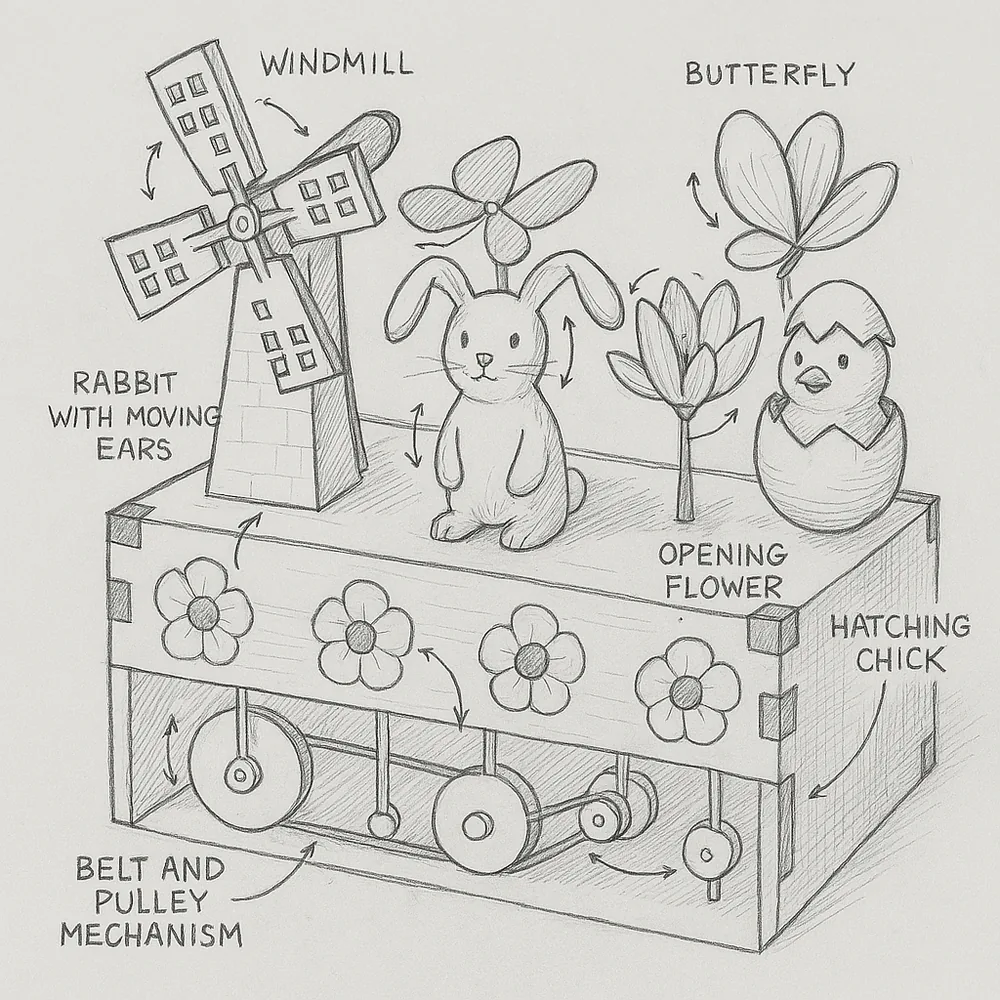
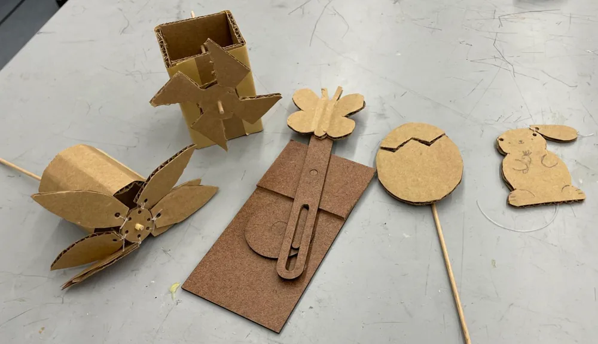
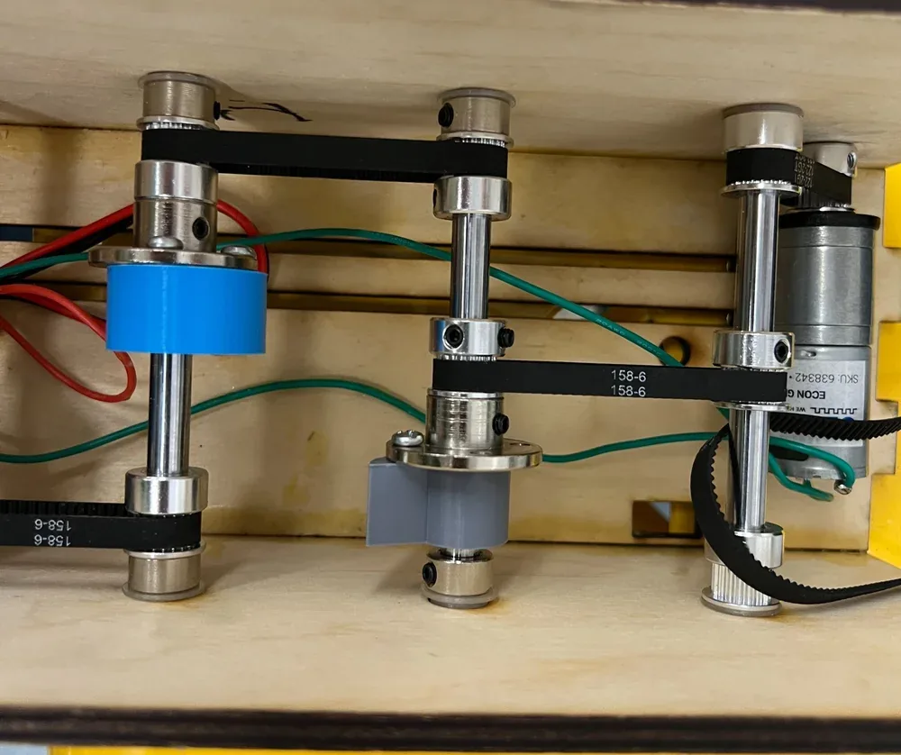
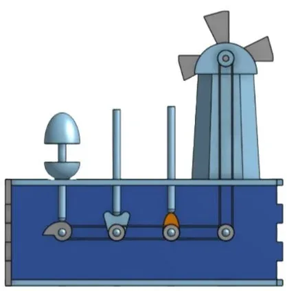
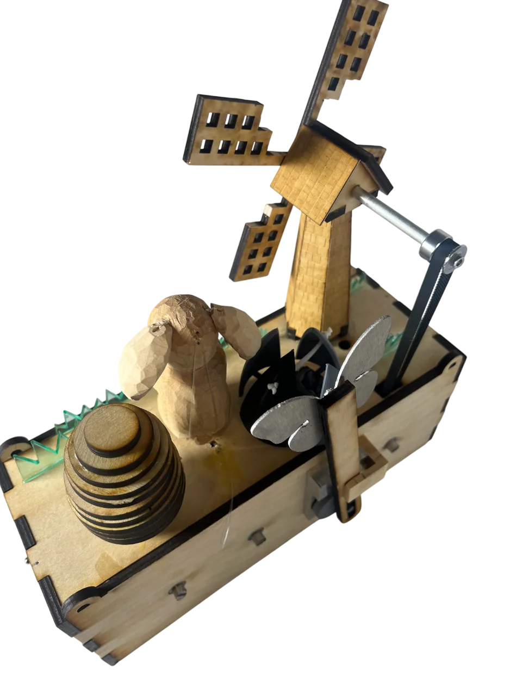
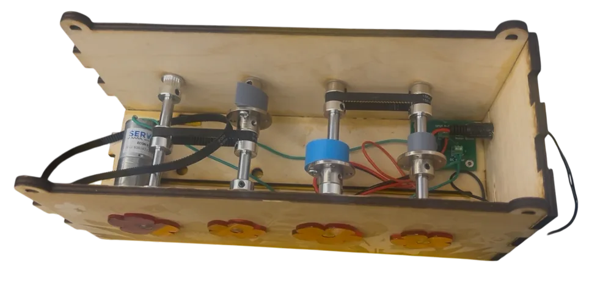

A spring-themed moving sculpture, built as a team. One DC motor inside a laser-cut box drives a belt around four vertical shafts, and cams, a four-bar linkage and a Scotch yoke on those shafts move five elements on the lid: a windmill, a butterfly, an opening flower, a bunny's ears and a hatching chick.
Overview
The brief was a moving sculpture with at least four independently moving parts, all run from one motor through a belt and pulley system. We chose five: windmill, butterfly, flower, bunny ears and hatching chick.
Design
Concept

The early sketches used a box as the base to hide the belt, pulleys and motor, with cams on the shafts moving the parts above the lid. The two exceptions were the windmill, driven directly by a belt and pulley, and the butterfly, which uses a Scotch yoke.
We wanted a clean look, mechanisms that were not overcomplicated, and enough separate pieces that each team member had something to build.
Prototyping

What we prototyped:
- Windmill structure and rotation using a basic shaft and pinwheel
- Linkage flower with opening petals, to test joint orientation and movement
- Butterfly on a Scotch yoke, for the up-down flutter
- Cam-driven egg, to see how the hatching would read
- Rope-pulled bunny ears, to test vertical actuation from a cam
What we learned:
- The box dimensions were set to fit all the mechanisms without crowding them
- Joint tolerance and alignment matter; loose fits jammed or wobbled
- The flower linkage was the hard one. A linkage around four separate pivot points was the easiest way to open the flower from a cam, which only gives one linear motion, in the wrong direction
- Assembly order became clearer, which let us plan sub-assemblies
CAD


The CAD model did three things for us:
- Fit: checked that the windmill, flower linkages, butterfly yoke, bunny cam and chick lifter all fit in the box without collisions
- Motion: let us test each mechanism's path and range before cutting anything
- Belt layout: set the pulley spacing, shaft alignment and belt tension across the four vertical shafts
Build
Mechanism crowding

Problem: Five moving parts on a small lid collided with each other in early testing.
Fix: We moved mechanisms and changed heights until every path was clear. That meant drilling new holes in the laser-cut box: the egg and flower moved back, the windmill moved forward, and after that everything cleared.
Cam profiles
The four cam profiles we tried: pear, circular, heart and drop.
Problem: The first cams had steep rises, which jammed the followers and gave uneven motion.
Fix: We redrew the cams with gentler rise and fall and tested them on scrap before the final cuts. We had planned to use a different profile on each shaft to learn about them (heart, circle, pear and drop). The odd shapes jammed. A plain circular cam with an offset hole worked best, so we used that for all of them.
Motor mount and belt tension

Problem: The motor had to be held firmly but the belt tension still had to be adjustable. A fixed mount gave inconsistent tension and the belt slipped.
Fix: I redrew the base panel with two slots so the motor mount slides. The motor is screwed down through the slots and can be moved along them to set belt tension, with no extra hardware.
Results
All five elements run off the one motor and belt. In the finished sculpture:
- The windmill spun fluidly
- The butterfly flapped using a Scotch yoke
- The flower opened through a four-bar linkage
- The bunny's ears moved up and down via cam and rope
- The chick hatched as a cam pushed its eggshell open
We added laser-cut clear acrylic grass to the lid to give the flat top some depth, next to the rastered wood. After the final tuning every mechanism ran as intended, the belt carried motion smoothly across the four shafts, and the whole thing ran reliably from the single motor.
A walkthrough of the sculpture and how each mechanism works.
What I learned
The build used CAD assembly with motion constraints, a CNC router for the box panels and mechanism parts, a lathe and mill for the shafts and axles, 3D printing for curved or detailed parts, plasma cutting for the larger, oddly shaped pieces, and laser cutting for the flat-pack parts. Along the way I learned belt and pulley sizing and tensioning, cam, linkage and Scotch yoke prototyping, planning sub-assemblies, and splitting the work across the team.